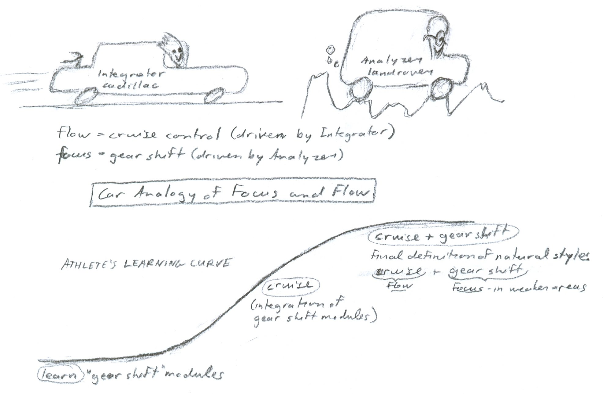
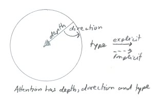
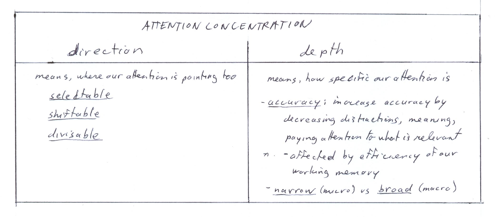
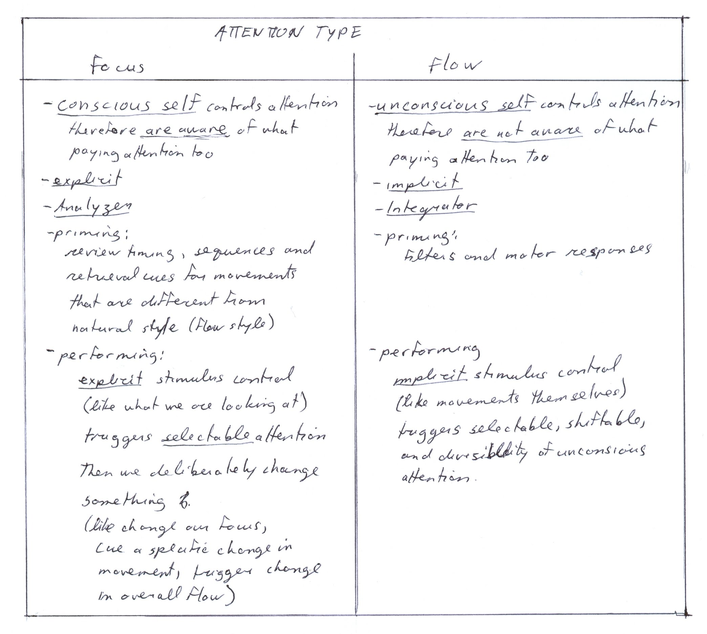
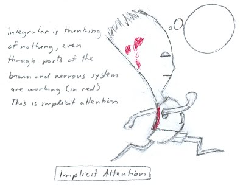
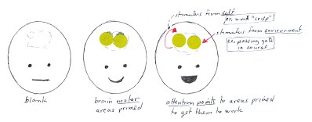
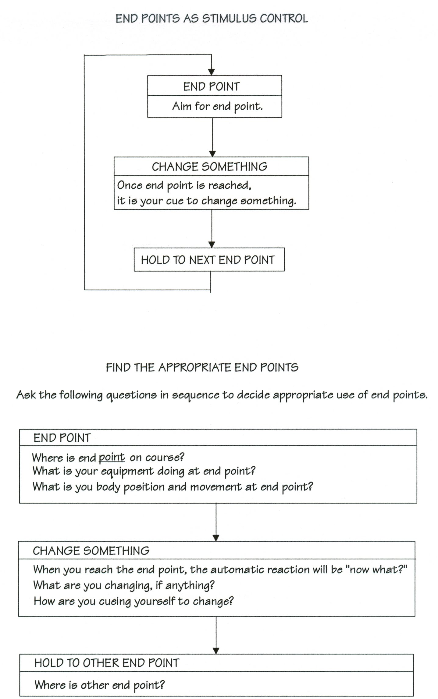

|
ch7 Self-Directed Coaching Manual
ch 7 PERFORMING SPORT
In the Goal Setting Section we created a generalized definition of the tasks involved in our sport. In Physiology Section I introduced the basic structures in the brain that are involved in learning and performing. In general, the Left Brain does the Analyzing, while the Right Brain does the Integrating. I explained the athlete’s learning curve, and had a suggestion of how the learning curve would look like and function when an athlete is trying to set new world standards. I suggested that this extended learning curve could be followed to help make more precise goals towards improvement. In the "Learning” chapter I suggested techniques that could be used to reach these goals. Then I discussed rehearsal and recall methods. Now I will explain the experience of actually performing.
FOCUS AND FLOW Focus and flow are words I use to describe the experience of performing an activity. Focus is when we have complete attention to the execution of a specific skill. This is performed by the Analyzer in the Left Brain. Flow is the state of being completely engrossed in the execution of a performance to the exclusion of everything else. This is performed by the Integrator in the Right Brain. More specifically, we experience flow when we are exclusively focused on our performance skills and routine being executed. We only focus on stimuli relevant to the sport. We are not focused on ourselves, meaning we are not aware of our own awareness, consciousness or ego. We are not evaluating our skills as we perform them. We do not experience distractions, such as thinking about results, judges, audience or expectations. We are not analyzing, meaning we have no conscious decisions in our mind, or any reasoning with words. Being in flow means avoiding all psychological game playing, like wanting to win or showing off, wanting to terrify opponent. Ironically, we can try so hard to achieve correct state of mind, that we end up distracting ourselves instead. So flow means that we are in complete control of our actions and reactions. The “zen” state of almost pure flow and concentration, is product of implicit unconscious. Focus, on the other hand, is our internal coach. It can be used to analyze our sport requirements. We could examine the physical skills we are executing, the tactics before execution of skills done during priming procedures, or we could examine the cues of our opponent or course situation. Focus requirements and cues to look for differ from sport to sport, position to position. So focus cues us to important strategic points in our performance, we use a skills-based approach. Focus is a skill. It is what we pay attention too. The more precise our focus, the better we are able to use it as a tool. We can improve our focus skills with practice. To improve concentrated focus we could practice the following method. Study the object for some time. Get completely involved with it. Its shape, color, texture, smell etc. Then switch to another object, and get completely involved with it. We can do the same method with sounds. Then, once we get a handle on concentrated focus, we can practice rapidly switching focus from one to another. Even with good focusing skills, we will find that we start to lose focus as we get better in our sport skills. This is because our reactions are more automatic, requiring less attention. In team sports, or opponents may not be challenging enough. We regain focus by creating new goals. So this is good news actually, as losing focus signals to us that we are ready for our new next improvement step. The new performance goals must be realistically achievable, yet difficult enough to maintain motivation, as explained in chapter 1. Figure 7-1 is a cartoon which uses a car analogy to describe the difference between focus and flow. Flow can be compared to cruise control in a car, while focus can be compared to gear shifting. When learning, we develop retrieval cues for default mode (cruise) and specific skills (gear shifting). Figure 7-1: Car Analogy of Focus and Flow 
ATTENTION Finally, here we are, performing our athletic routine. So what happens when we are performing? More specifically, how does it happen? Sounds philosophical, but it isn’t really. What we do is contingent on what we pay attention too. The key factor to good performance is good attention. When we mentally prime retrieval cues for our performance, there is an increase in metabolism in those areas. The neurons in these areas need a cue to fire off and trigger other appropriate areas. When we perform, one cue triggers the next cue which triggers the next, and so on. We achieve good performance with appropriate and well-timed attention cues. To use this as practical application for sport, I have some working definitions for attention. Attention concentration has elements of direction and depth, as charted in “Attention Concentration - Direction and Depth”, figure 7-2. Direction means where our attention is pointing too. Attention direction can be selectable, shiftable and divisible. Selective attention is the capacity to focus cognitive processes on a narrow band of sensory stimulation. This allows us to choose which stimuli to attend to, and which stimuli to ignore. Shiftability of attention refers to the ability to focus from one set of stimuli to another. Divisibility of attention is the ability to separate attention under certain circumstances. For example, talking and typing at the same time requires dividing attention between those two tasks. Figure 7-2: Attention Concentration - Direction and Depth 
Attention depth means how specific our attention it. It can be narrow or broad. Narrow attention is looking at micro elements, like a specific muscle group. Broad attention is looking at macro panoramas, like a sports field. The most important aspect of depth is accuracy. We increase accuracy by decreasing distraction, meaning, we pay attention to only what is relevant. At the neurological level, it is the sensory filters that do this screening process. Attentional depth is affected by the efficiency of our working memory. Although we cannot increase the size of our working memory, we can change how efficiently it operates. To start, just being awake and perky increases the efficiency of the working memory. Increasing the amount of time we spend actually using our working memory, increases its efficiency. If you don't use it, you lose it. By using your working memory, the metabolism in its pathways and neural structures are stimulated, and will be predisposed to fire off in the same fashion in the future. A primed and well-functioning working memory results in smoother performance. Figure 7-3 chart summarizes “Attention Concentration” types. Figure 7-3: Attention Concentration 
Now lets consider the types of attention we can use, and the affects that has on priming and performing. Consider the chart in figure 7-4, “Attention Types”. Attention type can be of focus or flow. Focused attention type means that our conscious self controls attention. We are aware of what we are paying attention too. It is explicit, and controlled by the Analyzer. During our priming procedures, we rehearse our focus attention abilities by reviewing timing, movement sequences, and retrieval cues for movements that are different than our default mode style. When performing, we use explicit stimulus control, like what we are looking at, triggering selectable attention. Then we deliberately change something, like changing our focus, cuing a specific change in movement, or triggering change on overall flow. Flow attention type means that our unconscious self controls attention. We are not aware of what we are paying attention too. It is implicit, and controlled by the Integrator, as shown in cartoon “Integrator = Implicit Attention”, figure 7-5. During priming procedures, we rehearse our filters and motor responses. When performing, we use implicit stimulus control, like movements themselves, triggering selectable, shiftable, divisible unconscious attention systems. Using the Analyzer-Integrator analogy, the Analyzer is the delegator, while the Integrator is the executor. The priming of retrieval cues for performance is analogous to waking up the Integrator. So the Integrator is "aroused". When performing, the Analyzer tells Integrator when to do something and what specifically needs to be done, "Do this routine now....do that routine now...". The diagram “Attention While Performing”, figure 7-6, recaps this discussion. Figure 7-4: Attention Types 
Figure 7-5: Implicit Attention 
Figure 7-6: Attention While Performing 
END POINTS AS STIMULUS CONTROL Thus far, I have explained how a retrieval cue will start an athletic movement, but how do we get it to start and stop at the right time? We can control timing by using attention strategy with end points as stimulus control. Stimulus control is method we can use to control of sports performance. Specifically, environmental situations cue us to change something. One such environmental condition is called an “end point.” An end point is something we aim for. We can use "end points" to make deliberate changes in our athletic style, or to hold onto our attention. End points section off a course. Sectioning off a course may simply be a cue to signal change, or it may be used to help finish the current task. The process of using end points as stimulus control is as follows: END POINT -> CHANGE SOMETHING -> HOLD TO OTHER END POINT. Even though we are making deliberate changes in your performance, flow should not get fully disrupted because aiming requires visual and tactical activity. This occurs in the right side of the brain, in the same area where flow occurs. Figure 7-7 describes use of “End Points as Stimulus Control”. How to use end points, step by step The first step: We “aim for an end point". We visualize ourselves moving through a premeditated point in a course. We always visualize like a video so the movements are smooth and continuous. If we visualize a static picture, our movements will become robotic. In this explanation I have defined an end point as a point that we aim for and move through. Theoretically, we can also aim for an end point and not move through it. It is often referred to as "spotting" a landing. The second step: Once we have reached our end point, it is our cue to "change something". When we reach an end point, our automatic reaction will be "now what"? There is a delay between the time we make up your mind on what to do, and the time this information gets sent through our spinal cord. Most of the delay is in making up our mind on what to do next. This is almost a zero wait state with mastery. Now what? What do we change at end point? Broadly speaking, we could change our athletic style, or we could change our attention. As far as our athletic style is concerned, we could change something specific, such as our arm position, or we could give a power punch. A power burst is a narrowly focused movement, outside our normal flow. It is like “gear shifting” in a car. Alternatively, we can change our feel or flow in athletic style. We could decide to feel “light on feet”, or “aggressive” or “controlling” in our flow. As mentioned, the other thing we could change at the end point is our attention. Sectioning off a course, or routine, helps us hold onto our attention. Specifically we can change our locus of control from external to internal, or focus from close to or from far. An example of changing focus, can be beneficial when we experience “information overload.” This occurs when we run out of room in our working memory. Recall, our working memories are small, five plus-minus two units, so we cannot pay attention to everything at the same time. Its more like a CD. We have lots of information, but can only look at the small part of what the laser is pointing too. So when we perform, we cannot think of our whole routine, and strategies. We know we have them, and have rehearsed them just before competition, so they are readily accessible, but our memory laser can only look at one small area of our performance at a time. Practically speaking, we have to decide what to pay attention too, and what not to pay attention too, at every point in our performance. Changing locus of control, can be beneficial when we want a small burst of super power. Assuming we perform our default mode, we can ignore it for a short period of time, up to one second, and do extreme internal focus on a specific muscle group to create a super power burst. An elite athlete can safely just let the spinal response, default mode, run their movements for a short moment. The athlete will have to “look” at where going or play very soon, but just focussing for a small moments inward, to execute a focused power burst, is safe. The third step: The new change continues until the next end-point is reached, where we have to change something again. Change direction, change gait, change power etc. We can also choose to be partially focused inward on specific tasks and partially focused outward looking at where we are going or what the opponent is doing. Figure 7-7: End Points as Stimulus Control 
Summary In summary, ask these questions in sequence to decide appropriate use of end points. To find end point, Where is end point on course? What is my equipment doing at end point? What is my body position at end point? At end point we change something. When we reach end point, our automatic reaction will be “now what?” What are we changing, if anything? How are we cuing ourselves to change? Now all we have to do is hold this to the next end point. Where is the next end point? These questions are the analysis and strategy of what we want to accomplish. Once we have decided where our end points are and what changes we make there, we can rehearse this until it becomes automatic. This means, when we are in our premeditated environment, we will automatically react in our premeditated way. [end of chapter 7 ] SDCM home |